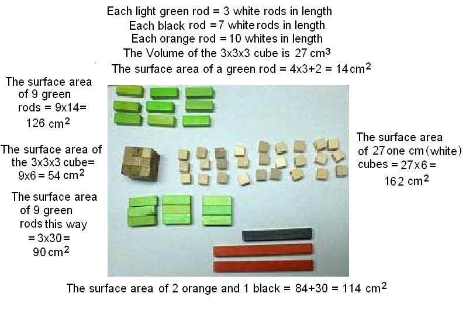

Do you put a big chunck of cheese on your spaghetti? /Chapter 6
Don had a 3x3x3 cm cube. He posed the question, what is the shape that would have the largest Surface Area for the 27cm3 ?

So the largest surface area with a volume of 27cm3 (made with the rods), would be the the 27 one-cm cubes. If you were putting cheese on your spaghetti, you would not use a big chunck, but would grate it. The grated cheese would have a larger surface area and get around all the spaghetti- uummmm, good!
Also see on the MAP SA/Vol ratio of rods and why rodents are noctunal animals- another Math in Science.